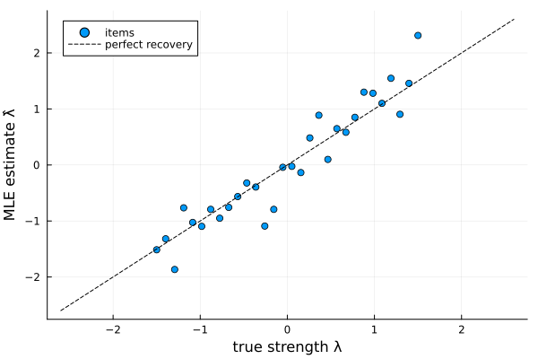
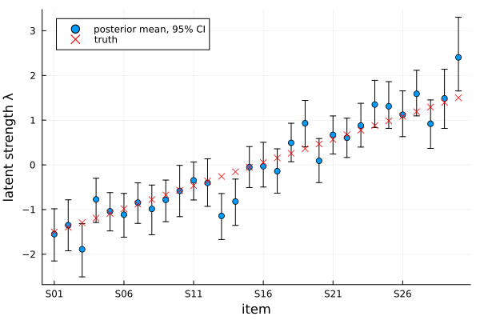

Thurstone Case V models
Thurstone's Law of Comparative Judgment models each comparison as a contest between two noisy discriminal processes. In Case V — equal variances, no correlation — item $i$ has a latent strength $\lambda_i$ and draws a utility $u_i \sim N(\lambda_i, \tfrac12)$ on each comparison; $i$ wins when $u_i > u_j$. The difference $u_i - u_j$ is then $N(\lambda_i-\lambda_j, 1)$, so
\[P(i \text{ beats } j) = \Phi(\lambda_i - \lambda_j),\]
with $\Phi$ the standard-normal CDF. This is the probit counterpart of the Bradley–Terry model, which uses a logistic link; the two give very similar fits, differing mainly in the tails.
This page fits the plain Thurstone Case V model two ways on one simulated dataset:
- Maximum likelihood (
MLE) — fast point estimates of the strengths via L-BFGS on the probit log-likelihood. - Bayesian (
Bayesian) — an Albert–Chib augmented Gibbs sampler (each comparison gets a latent truncated-normal utility) giving full posteriors.
Two extensions build on it, each with its own page: the anchored model calibrates the latent scale to real measurements, and the covariate model explains strengths with item covariates.
ThurstoneCaseV carries a distribution field that defaults to :normal, the Gaussian discriminal process that defines Case V. It is the only distribution currently implemented.
Simulating comparison data
We simulate 30 items with known, evenly spaced strengths and 600 comparisons in total, each between a randomly chosen pair. Drawing the comparison directly from the discriminal-process story — add unit-variance normal noise to the strength difference and check its sign — reproduces the probit link exactly:
using ComparativeJudgement
using Random
using Plots
rng = MersenneTwister(42)
labels = ["S" * lpad(i, 2, '0') for i in 1:30] # S01 … S30
n = length(labels)
λ_true = collect(range(-1.5, 1.5, length=n)) # S01 weakest … S30 strongest
n_comparisons = 600
wins = zeros(Int, n, n)
for _ in 1:n_comparisons
i = rand(rng, 1:n)
j = rand(rng, 1:n-1)
j = j >= i ? j + 1 : j # distinct random pair
if (λ_true[i] - λ_true[j]) + randn(rng) > 0 # u_i − u_j ~ N(λ_i−λ_j, 1)
wins[i, j] += 1
else
wins[j, i] += 1
end
end
data = PairwiseData(wins, labels)wins[i, j] counts how often item i beat item j; PairwiseData pairs the matrix with the item labels.
Maximum likelihood
fit takes the model, the inference method, and the data:
fitted_mle = fit(ThurstoneCaseV(), MLE(), data)
fitted_mle.convergedtrue(fit(ThurstoneCaseV(), data) is shorthand for the same thing.) strengths returns the estimated $\hat\lambda$, centred to sum to zero — directly comparable to λ_true:
λ̂ = strengths(fitted_mle)
scatter(λ_true, λ̂;
xlabel="true strength λ", ylabel="MLE estimate λ̂",
label="items", legend=:topleft)
plot!(identity, -2.6:0.1:2.6; linestyle=:dash, color=:black, label="perfect recovery")
Ranking the items is a sortperm away; with only 600 comparisons adjacent items (separated by 0.10 on the latent scale) occasionally swap:
labels[sortperm(λ̂, rev=true)]30-element Vector{String}:
"S30"
"S27"
"S29"
"S24"
"S25"
"S26"
"S28"
"S19"
"S23"
"S21"
⋮
"S07"
"S14"
"S08"
"S05"
"S13"
"S06"
"S02"
"S01"
"S03"probability gives fitted win probabilities $\Phi(\hat\lambda_i - \hat\lambda_j)$, by label or index, and loglikelihood the log-likelihood at the estimate:
(probability(fitted_mle, "S30", "S01"), loglikelihood(fitted_mle))(0.9999349888158111, -222.18390194839452)Bayesian inference
The Bayesian fit augments each comparison with a latent normal utility truncated by its outcome (Albert & Chib, 1993), which makes the $\lambda$ update a conjugate Gaussian draw. Bayesian controls the run; the prior on $\lambda$ is a NormalPrior, by default $N(0, 10 I)$:
method = Bayesian(n_samples=2000, n_burnin=500)
fitted_bayes = fit(ThurstoneCaseV(), method, data, NormalPrior(n); rng=rng)Posterior summaries come from posterior_mean, posterior_std, and credible_interval. Plotting the posterior means with their 95% credible intervals against the truth shows the comparison sparsity — each strength is known only to within a few tenths, and nearly all intervals straddle the truth:
post = posterior_mean(fitted_bayes)
ci = [credible_interval(fitted_bayes, k; prob=0.95) for k in 1:n]
lo, hi = first.(ci), last.(ci)
scatter(1:n, post;
yerror=(post .- lo, hi .- post),
xlabel="item", ylabel="latent strength λ",
xticks=(1:5:n, labels[1:5:n]),
label="posterior mean, 95% CI", legend=:topleft)
scatter!(1:n, λ_true; marker=:x, color=:red, label="truth")
For Bayesian fits, probability returns the posterior mean win probability, averaging $\Phi(\lambda_i - \lambda_j)$ over the draws:
(probability(fitted_bayes, "S30", "S01"), probability(fitted_bayes, "S16", "S15"))(0.9997936983860677, 0.5080178933847991)The MLE point estimate and the posterior mean agree closely — as they should, since the data are informative and the prior is weak:
using Statistics: cor
round(cor(strengths(fitted_mle), posterior_mean(fitted_bayes)), digits=4)0.9999